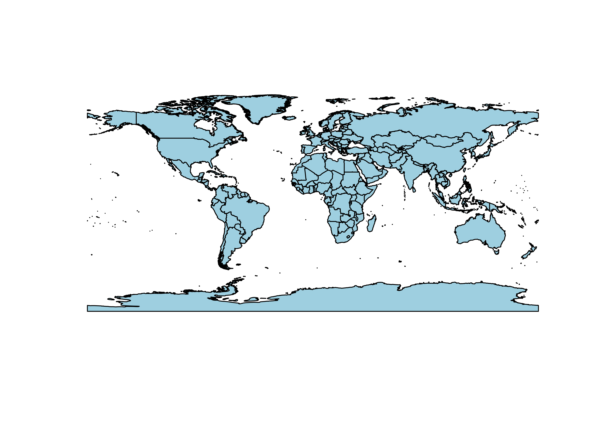
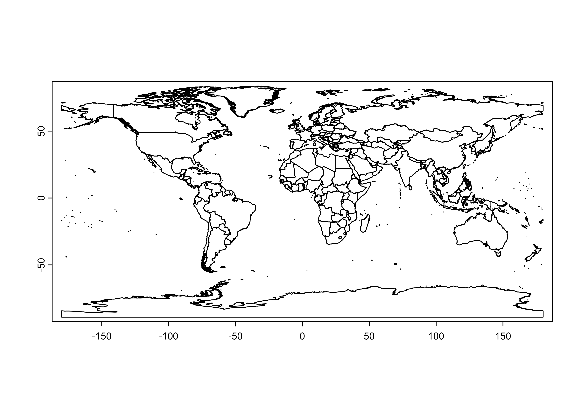
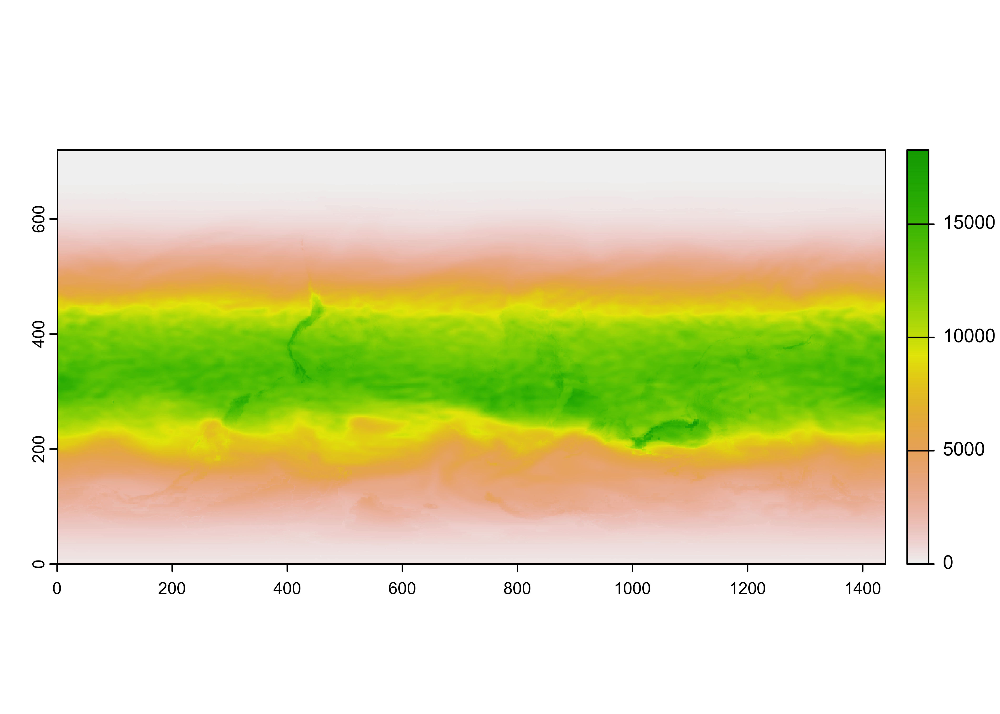
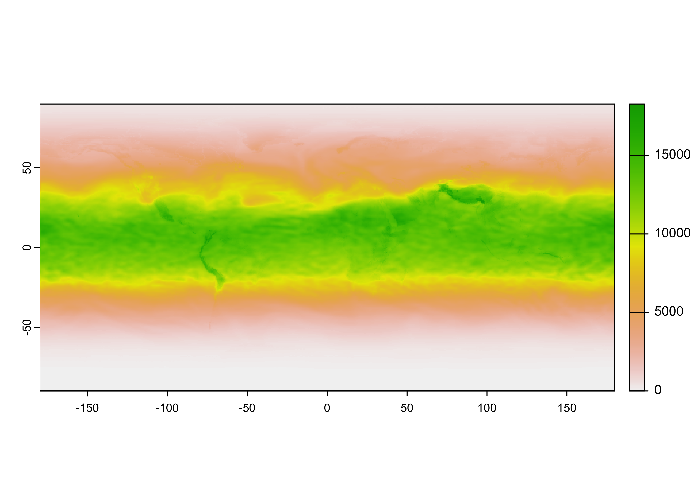
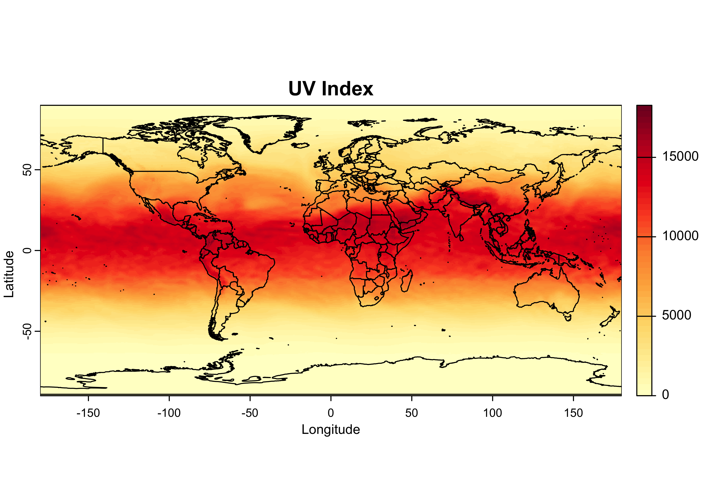
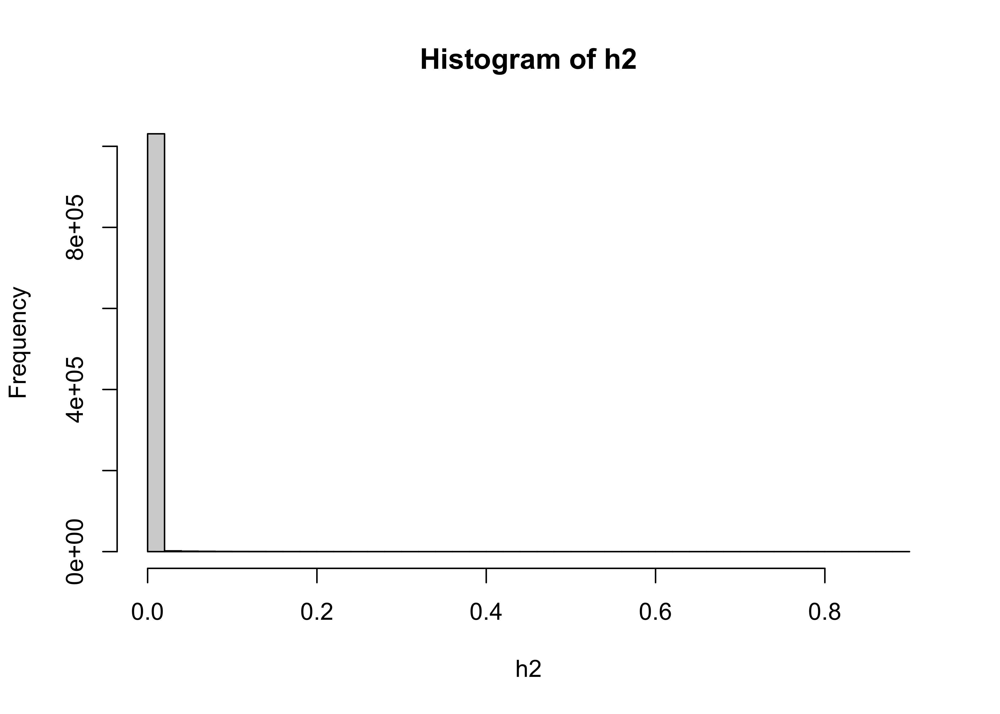
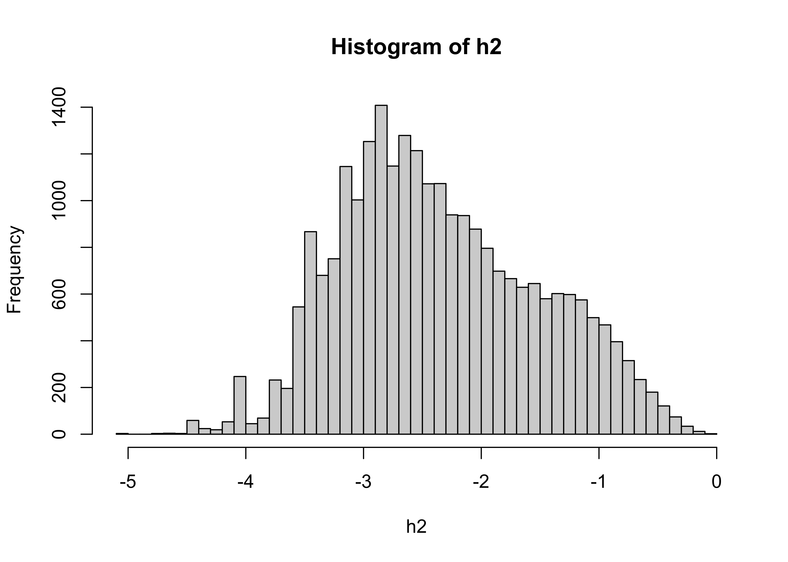
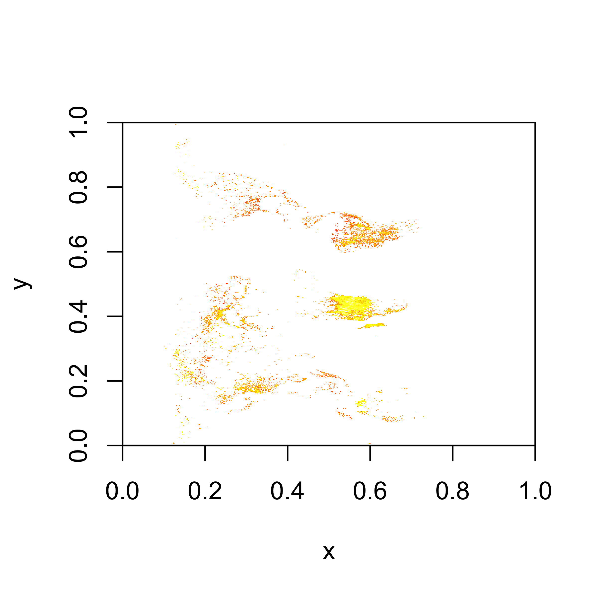
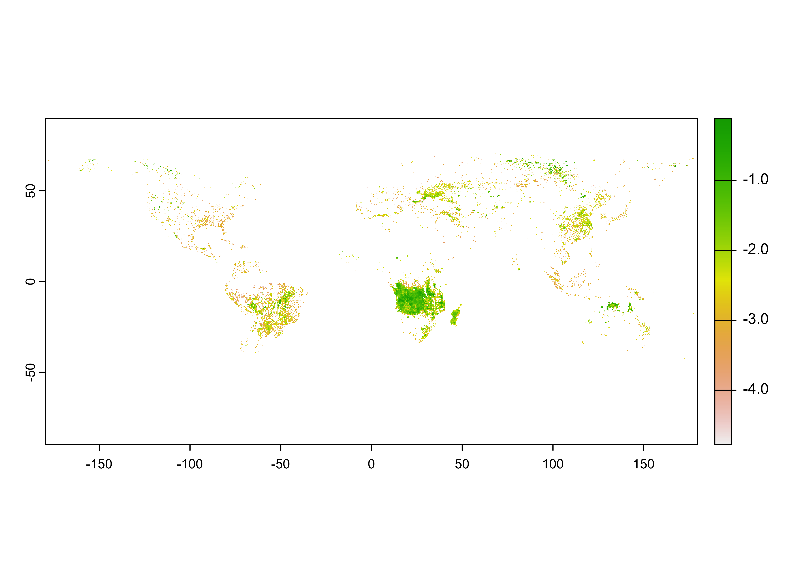

HDF
NOTE: This page has been revised
for the 2024 version of the course, but there may be some additional
edits.
1 Introduction
HDF (Hierarchical Data Format), see [https://www.hdfgroup.org] is another format for storing large data files and associated metadata, that is not unrealted to netCDF, because in fact netCDF-4 uses the HDF-5 “data model” to store data. There are currently two versions of HDF in use HDF4 and HDF5, and two special cases designed for handling satellite remote-sensing data (HDF-EOS and HDF-EOS5). Unlike netCDF-4, which is backward compatible with netCDF-3, the two versions are not mutually readible, but there are tools for converting between the different versions (as well as for converting HDF files to netCDF files).
HDF5 files can be read and written in R using the rhdf5
package, which is part of the Bioconductor collection of packages. HDF4
files can also be handled via the rgdal package, but the
process is more cumbersome. Consequently, the current standard approach
for analyzing HDF4 data in R is to first convert it to HDF5 or netCDF,
and proceed from there using rhdf5.
Compared to netCDF files, HDF files can be messy: they can contain images as well as data, and HDF5 files in particular may contain groups of datasets, which emulated in some ways the folder/directory stucture on a local machine. This will become evident below.
2 Preliminary set up
The rhdf5 package can be retrieved from Bioconductor,
and installed as follows. Generally, a lot of dependent packages will
also need to be installed as well, but the process is usually
straightforward.
# install rhdf5
if (!requireNamespace("rhdf5", quietly = TRUE))
install.packages("BiocManager")
BiocManager::install("rhdf5", version = "3.18", force = TRUE)The examples below use data from TEMIS, the Tropospheric Emission Monitoring Internet Service ([http://www.temis.nl/index.php]), and the Global Fire Emissions Database (GFED, [https://www.globalfiredata.org/index.html]). The TEMIS data are HDF4 and need to be converted, while the GFED data are HDF5. The specific data sets can be found on the ClimateLab SFTP server.
The various conversion tasks and tools are:
- HDF4 to HDF5:
h4toh5convertfrom the HDFGroup [h4h5tools] - HDF4 to netCDF:
h4tonccf(netCDF-3), andh4tonccf_nc4(netCDF-4), from HDF-EOS [http://hdfeos.org/software/h4cflib.php] - HDF4 and HDF5 (and other file types) to netCDF:
ncl_convert2ncfrom Unidata [https://www.ncl.ucar.edu/]
The first two conversion tools have installers for MacOS, Windows and
Linux. On the Mac, it will usually be the case that the executable file
should be moved to the /Applications folder, while on Windows the usual
fooling around with paths will be required. The
ncl_convert2nc tool is part of NCL, which can be installed
on run on Windows 10/11 machines using the Linux subsystem for Windows
(WSL2.
There are some useful tutorials on using HDF in R from the NSF NEON program:
Begin by loading the appropriate packages:
For latter plotting of the data, also read a world outline file. The
file(s) can be copied from the class RESS server, or by downloading the
contents of the folder at [https://pages.uoregon.edu/bartlein/RESS/shp_files/world2015/].
Clicking on this link should open a file listing on the server, from
which you can download the files. Note that shape files consist of
multiple files, e.g. *.shp, *.shx,
*.dbf, *.prj, cpg, and all must
be downloaded.Alternatively you could use FileZilla to download the
files from the course SFTP server. Note that shape files consist of
multiple files, e.g. *.shp, *.shx,
*.dbf, *.prj, cpg, and all must
be downloaded.
Move the download files to a convenient folder,
e.g. /Users/bartlein/Projects/ESSD/data/shp_files/world2015/,
and plot the outlines.
# plot the world outline
shp_file <- "/Users/bartlein/Projects/RESS/data/shp_files/world2015/UIA_World_Countries_Boundaries.shp"
world_outline <- as(st_geometry(read_sf(shp_file)), Class = "Spatial")
plot(world_outline, col="lightblue", lwd=1)
Convert the world_outline to a spatial vector for adding
to terra maps later.
## [1] "SpatVector"
## attr(,"package")
## [1] "terra"
2.1 Convert an HDF4 file to HDF5
Here’s a link to the .hdf file: [https://pages.uoregon.edu/bartlein/RESS/hdf_files/hdf_files/uvief20190423.hdf/].
Download the file and copy the file a convenient places, say, a folder
/hdf_files in your data folder
(e.g. /Users/bartlein/Projects/ESSD/data/hdf_files/)
In this example, a data set of the “Clear-Sky UV Index”” from TEMIS
was downloaded (i.e. uvief20190423.hdf – 2019-04-23) from
the website listed above. This is an HDF4 file, which can be verified in
Panoply. Viewing files in Panoply is always good practice–in this case
the particular layout of the data in file is rather ambiguous at first
glance, and so getting a look at the contents of the file before
attempting to read it is a good idea.
The HDF4 file can be converted by typing in a terminal or command window (for example):
h4toh5convert uvief20190423.hdf
# or, e.g.: /Users/bartlein/Downloads/hdf/HDF_Group/H4H5/2.2.5/bin/h4toh5convert GFED4.0_DQ_2015270_BA.hdf
# if the h4toh5convert.exe program isn't in the PATHThis will create the file uvief20190423.h5. (Note that
an explicit output filename and path can be included. Not everything in
the HDF4 file will be converted, and it’s likely that a number of error
messages will appear, giving the impression that the operation has
failed. Check to see whether in fact the HDF5 was indeed created, and
has something in it (via Panoply).)
3 Read a simple HDF5 file
Begin by setting paths and filenames:
# set path and filename
hdf_path <- "/Users/bartlein/Projects/RESS/data/hdf_files/"
hdf_name <- "uvief20190423.h5"
hdf_file <- paste(hdf_path, hdf_name, sep="")List the contents of the file. (WARNING: This can produce a lot of output)
## group name otype dclass dim
## 0 / Latitudes H5I_DATASET FLOAT 720
## 1 / Longitudes H5I_DATASET FLOAT 1440
## 2 / Ozone_column H5I_DATASET INTEGER 1440 x 720
## 3 / UVI_error H5I_DATASET INTEGER 1440 x 720
## 4 / UVI_field H5I_DATASET INTEGER 1440 x 720
## 5 / fakeDim0 H5I_DATASET INTEGER 720
## 6 / fakeDim1 H5I_DATASET INTEGER 1440Read the attributes of the UVI_field variable, the UV
index:
## Warning in H5Aread(A, ...): Reading attribute data of type 'VLEN' not yet implemented. Values replaced
## by NA's.## $DIMENSION_LIST
## [1] NA NA
##
## $No_data_value
## [1] "-1.0E+03 * scale_factor"
##
## $Scale_factor
## [1] 0.001
##
## $Title
## [1] "Erythemal UV index"
##
## $Units
## [1] "1 [ 1 UV index unit equals 25 mW/m2 ]"Get the latitudes and longitudes of the grid:
## [1] 1440## [1] -179.875 -179.625 -179.375 -179.125 -178.875 -178.625## [1] 178.625 178.875 179.125 179.375 179.625 179.875## [1] 720## [1] -89.875 -89.625 -89.375 -89.125 -88.875 -88.625## [1] 88.625 88.875 89.125 89.375 89.625 89.875Get the UV data, and convert it to a SpatRaster object,
and get a short summary. Note that the UVI data is in layer 3 of the
raster brick.
hdf_file <- "/Users/bartlein/Projects/RESS/data/hdf_files/uvief20190423.h5"
UVI_in <- rast(hdf_file, lyrs = 3)## Warning: [rast] unknown extent## class : SpatRaster
## dimensions : 720, 1440, 1 (nrow, ncol, nlyr)
## resolution : 1, 1 (x, y)
## extent : 0, 1440, 0, 720 (xmin, xmax, ymin, ymax)
## coord. ref. :
## source : uvief20190423.h5://UVI_field
## varname : UVI_field
## name : UVI_field
Notice that the raster has an unknown extent (i.e the range of longitudes and latitudes), and it also appears to be upside down. Flip the raster, and add the longitude and latitude extent.
# flip the raster
UVI <- flip(UVI_in, direction = "vertical")
# add the spatial extent
ext(UVI) <- c(-179.875, 179.875, -89.875, 89.875)
UVI## class : SpatRaster
## dimensions : 720, 1440, 1 (nrow, ncol, nlyr)
## resolution : 0.2498264, 0.2496528 (x, y)
## extent : -179.875, 179.875, -89.875, 89.875 (xmin, xmax, ymin, ymax)
## coord. ref. :
## source(s) : memory
## varname : UVI_field
## name : UVI_field
## min value : 0
## max value : 18342Plot the raster:

Looks ok. Remove the input file:
Note that the data could also be read as an a matrix, or 2d array
## [1] "matrix" "array"## int [1:1440, 1:720] 0 0 0 0 0 0 0 0 0 0 ...Remove the array:
3.1 Plot the UV data
A plot with overlain outlines can be produced as follows:
color_fun <- colorRampPalette(brewer.pal(9,"YlOrRd"))
plot(UVI, col = color_fun(50), main = "UV Index", ylab = "Latitude", xlab = "Longitude")
plot(world_otl, add = TRUE)
The colorRampPalette() function creates another function
color_fun that can be used to interpolate a color scale or
ramp, here the RColorBrewer “YlOrRd” scale. When supplied
to the col argument in the plot() function, it
creats a color ramp with 50 steps
Close the open files before moving on:
4 Read a more complicated HDF5 file
A much more stuctured file that exploits the ability of HDF5 to store data in “groups” that mimics in some ways the directory or folder structure on a local computer is represented by the GFED4.1 fire data set. Here’s a link to the file: [https://pages.uoregon.edu/bartlein/RESS/hdf_files/hdf_files/GFED4.1s_2016.hdf5]. Dowload the file as usual. Begin by setting paths and file names.
# set path
hdf_path <- "/Users/bartlein/Projects/RESS/data/hdf_files/"
hdf_name <- "GFED4.1s_2016.hdf5"
hdf_file <- paste(hdf_path, hdf_name, sep="")List the file contents, DOUBLE WARNING: This really does produce a lot of output, only some is included here:
## group name otype dclass dim
## 0 / ancill H5I_GROUP
## 1 /ancill basis_regions H5I_DATASET INTEGER 1440 x 720
## 2 /ancill grid_cell_area H5I_DATASET FLOAT 1440 x 720
## 3 / biosphere H5I_GROUP
## 4 /biosphere 01 H5I_GROUP
## 5 /biosphere/01 BB H5I_DATASET FLOAT 1440 x 720
## 6 /biosphere/01 NPP H5I_DATASET FLOAT 1440 x 720
## 7 /biosphere/01 Rh H5I_DATASET FLOAT 1440 x 720
## 8 /biosphere 02 H5I_GROUP
## 9 /biosphere/02 BB H5I_DATASET FLOAT 1440 x 720
## 10 /biosphere/02 NPP H5I_DATASET FLOAT 1440 x 720
## 11 /biosphere/02 Rh H5I_DATASET FLOAT 1440 x 720
...
## 52 / burned_area H5I_GROUP
## 53 /burned_area 01 H5I_GROUP
## 54 /burned_area/01 burned_fraction H5I_DATASET FLOAT 1440 x 720
## 55 /burned_area/01 source H5I_DATASET INTEGER 1440 x 720
## 56 /burned_area 02 H5I_GROUP
## 57 /burned_area/02 burned_fraction H5I_DATASET FLOAT 1440 x 720
## 58 /burned_area/02 source H5I_DATASET INTEGER 1440 x 720
## 59 /burned_area 03 H5I_GROUP
...Read the longtidues and latiudes. A preliminary look at the file in Panoply revealed that longitudes and latitudes were stored as full matices, as opposed to vectors. Consequently, after reading, only the first row (for longitude) and first column (for latitude) were stored.
# read lons and lats
lon_array <- h5read(hdf_file, "lon")
lon <- lon_array[,1]
nlon <- length(lon)
nlon## [1] 1440## [1] -179.875 -179.625 -179.375 -179.125 -178.875 -178.625## [1] 178.625 178.875 179.125 179.375 179.625 179.875## [1] 720## [1] -89.875 -89.625 -89.375 -89.125 -88.875 -88.625## [1] 88.625 88.875 89.125 89.375 89.625 89.875Read the attributes of the burned_area variable:
# read the attributes of the burned_area variable
h5readAttributes(hdf_file, name = "/burned_area/07/burned_fraction/")## $long_name
## [1] "GFED4s burned fraction. Note that this INCLUDES an experimental \"small fire\" estimate and is thus different from the Giglio et al. (2013) paper"
##
## $units
## [1] "Fraction of grid cell"From the listing of the contents of the file, and the information
provided in Panoply, it can be seen that, for example, the burned
fraction (the proportion of a grid cell burned), for July 2016 is in the
variable named /burned_area/07/burned_fraction. Get that
variable:
## [1] "matrix" "array"## num [1:1440, 1:720] 0 0 0 0 0 0 0 0 0 0 ...The distribution of the burned fraction data is extremely long-tailed, meaning there are a lot of small values and few large ones:

The usual strategy for dealing with such data is to log transform it:

## class : SpatRaster
## dimensions : 1440, 720, 1 (nrow, ncol, nlyr)
## resolution : 1, 1 (x, y)
## extent : 0, 720, 0, 1440 (xmin, xmax, ymin, ymax)
## coord. ref. :
## source(s) : memory
## name : lyr.1
## min value : -5.09686064
## max value : -0.05363899Take a quick look:

The plot, confirmed by Panoply, suggests that the raster needs to be transposed.
## class : SpatRaster
## dimensions : 720, 1440, 1 (nrow, ncol, nlyr)
## resolution : 1, 1 (x, y)
## extent : 0, 1440, 0, 720 (xmin, xmax, ymin, ymax)
## coord. ref. :
## source(s) : memory
## name : lyr.1
## min value : -5.09686064
## max value : -0.05363899
As was the case with the Ozone data, the rasterized input data
(BF) does not contain spatial entent data. These can be
gotten from the longitude and latitude data read in above using the
h5read() function.
## class : SpatRaster
## dimensions : 720, 1440, 1 (nrow, ncol, nlyr)
## resolution : 0.2498264, 0.2496528 (x, y)
## extent : -179.875, 179.875, -89.875, 89.875 (xmin, xmax, ymin, ymax)
## coord. ref. :
## source(s) : memory
## name : lyr.1
## min value : -5.09686064
## max value : -0.05363899